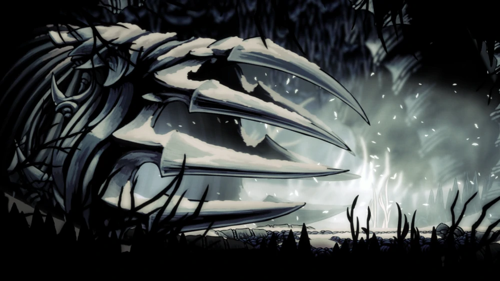
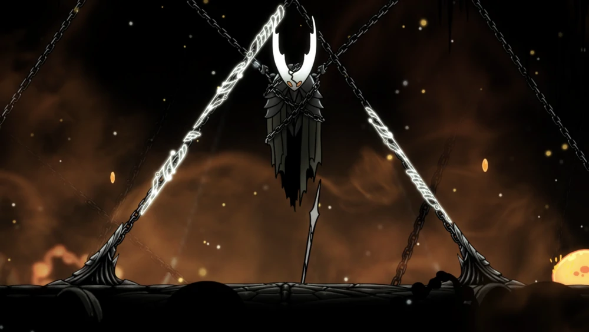
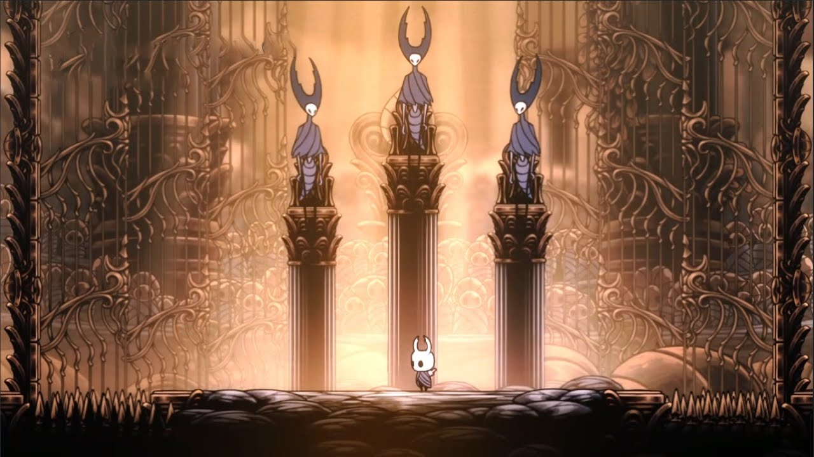

Forge seu próprio caminho em Hollow Knight!
Uma aventura de ação épica através de um vasto reino arruinado de insetos e heróis. Explore cavernas sinuosas, lute contra criaturas contaminadas e faça amizade com insetos bizarros, tudo em um estilo 2D clássico e desenhado a mão.

Explore o mundo de Hallownest!
Hallownest é o local onde Hollow Knight acontece. Antigamente um reino próspero no meio de uma terra vazia, ele caiu em ruína por ao acordar da Infecção
A terra de Hallownest cobre uma vasta ligação de cavernas e túneis no meio de uma terra desolada. É habitado por insetos tanto conscientes quanto selvagens, entre outras criaturas.

A Infecção
A Infecção, também conhecida como a doença ancestral, a luz brilhante, ou a praga, a a força antagonista principal em Hollow Knight, trazendo a morte de milhares de insetos e ultimamente a queda do reino de Hallownest.
Conhecendo a fúria de um Deus abandonado e esquecido, os insetos começaram a sonhar com a Radiância, que buscava vingança pelo seu esquecimento. Mesmo com muitas tentativas de se protegerem, os insetos de Hallownest se tornaram cascas vazias, com suas mentes infectadas pela substância laranja.

Lute contra os guerreiros e os deuses de Hallownest!
Com mais de 40 chefões no jogo, experiencie um combate difícil e estimulante contra os diversos guerreiros, deuses, e monstros infectados pelas cavernas de Hallownest.
